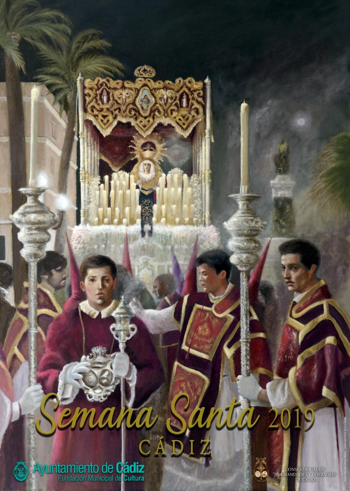

Hola, gracias por tu interés y atención en nosotros. Somos un grupo de amigos qu ha querido que la gente sepa mas sobre
Cádiz. Aqui podras encontrar información sobre calles, plazas, museos, asi como, las dos fiestas mas notables como son,
el Carnaval de Cadiz y la Semana Santa Siguenos en:


Hello, thank you for your interest and attention in us. We are a group of friends who wanted people to know more about
Cádiz. Here you can find information about streets, squares, museums, as well as, the two most notable festivals such as
the Carnival of Cadiz and Holy Week. Follow us on:

Semana Santa
La Semana Santa de Cádiz siempre se ha caracterizado por la pasión y entrega que todos sus cofrades y hermandades ponen en esos días unida a la entrega que los espectadores ponen y cómo se engalanan las calles de Cádiz, hacen de la Semana Santa de Cádiz una de las mas atractivas del país.
Mas información
Carnaval
El Carnaval de Cádiz, declarado de Interés Turístico Internacional, supone una de las fiestas más genuinas e importantes de España, cuyas raíces se remontan al siglo XVII. Es una fiesta con gran capacidad de crítica, en la que los grupos de ciudadanos disfrazados expresan con sátira los acontecimientos de actualidad.
Masinformación